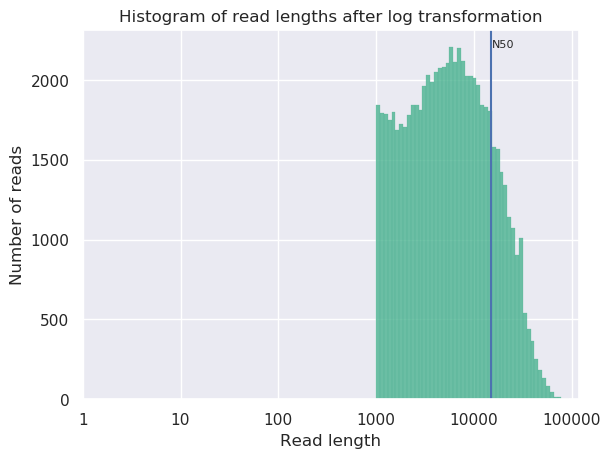

Genome Assembly of MRSA using Oxford Nanopore MinION Data
| Author(s) |
|
| Editor(s) |
|
OverviewQuestions:
Objectives:
How to check the quality of the MinION data?
How to perform an assembly with MinION data?
What species do I have and what is its sequence type?
Which resistance genes are on my genome?
Where are the genes located on my genome?
Requirements:
Assess your data on quality and quantity
Assemble a genome
Assess your assembly quality
Assess presence of antimicrobial resistance genes
Perform a species identification and MLST typing
Search for resistance genes on the assembly
Find a gene on your genome using Prokka + JBrowse
- Introduction to Galaxy Analyses
- Sequence analysis
- Quality Control: slides slides - tutorial hands-on
Time estimation: 2 hoursSupporting Materials:Published: Mar 24, 2021Last modification: Nov 21, 2023License: Tutorial Content is licensed under Creative Commons Attribution 4.0 International License. The GTN Framework is licensed under MITpurl PURL: https://gxy.io/GTN:T00037version Revision: 28
In this training you’re going to make an assembly of data produced by “Complete Genome Sequences of Eight Methicillin-Resistant Staphylococcus aureus Strains Isolated from Patients in Japan” from Hikichi et al. 2019 which describes:
Methicillin-resistant Staphylococcus aureus (MRSA) is a major pathogen causing nosocomial infections, and the clinical manifestations of MRSA range from asymptomatic colonization of the nasal mucosa to soft tissue infection to fulminant invasive disease. Here, we report the complete genome sequences of eight MRSA strains isolated from patients in Japan.
AgendaIn this tutorial, we will cover:
Background
Sequencing (determining of DNA/RNA nucleotide sequence) is used all over the world for all kinds of analysis. The product of these sequencers are reads, which are sequences of detected nucleotides. Depending on the technique these have specific lengths (30-500bp) or using Oxford Nanopore Technologies sequencing have much longer variable lengths.
Comment: Nanopore sequencingNanopore sequencing has several properties that make it well-suited for our purposes
- Long-read sequencing technology offers simplified and less ambiguous genome assembly
- Long-read sequencing gives the ability to span repetitive genomic regions
- Long-read sequencing makes it possible to identify large structural variations
")
When using Oxford Nanopore Technologies (ONT) sequencing, the change in electrical current is measured over the membrane of a flow cell. When nucleotides pass the pores in the flow cell the current change is translated (basecalled) to nucleotides by a basecaller. A schematic overview is given in the picture above.
When sequencing using a MinIT or MinION Mk1C, the basecalling software is present on the devices. With basecalling the electrical signals are translated to bases (A,T,G,C) with a quality score per base. The sequenced DNA strand will be basecalled and this will form one read. Multiple reads will be stored in a fastq file.
Hands-on: Data upload
- Create a new history for this tutorial
Import the files from Zenodo or from the shared data library
https://zenodo.org/record/4534098/files/DRR187567.fastq.bz2
- Copy the link location
Click galaxy-upload Upload Data at the top of the tool panel
- Select galaxy-wf-edit Paste/Fetch Data
Paste the link(s) into the text field
Press Start
- Close the window
As an alternative to uploading the data from a URL or your computer, the files may also have been made available from a shared data library:
- Go into Shared data (top panel) then Data libraries
- Navigate to the correct folder as indicated by your instructor.
- On most Galaxies tutorial data will be provided in a folder named GTN - Material –> Topic Name -> Tutorial Name.
- Select the desired files
- Click on Add to History galaxy-dropdown near the top and select as Datasets from the dropdown menu
In the pop-up window, choose
- “Select history”: the history you want to import the data to (or create a new one)
- Click on Import
Convert the datatype of this output to uncompress it
- Click on the galaxy-pencil pencil icon for the dataset to edit its attributes
- In the central panel, click on the galaxy-gear Convert tab on the top
- In the upper part galaxy-gear Convert, select
Convert compressed to uncompressed- Click the Create dataset button to start the conversion.
Rename the dataset to just the sequence run ID:
DRR187567
- Click on the galaxy-pencil pencil icon for the dataset to edit its attributes
- In the central panel, change the Name field to
DRR187567- Click the Save button
Tag the dataset
#unfiltered
- Click on the dataset to expand it
- Click on Add Tags galaxy-tags
- Add a tag starting with
#
- Tags starting with
#will be automatically propagated to the outputs of tools using this dataset.- Press Enter
- Check that the tag appears below the dataset name
View galaxy-eye the renamed file
Question
- What are the 4 main features of each read in a fastq file.
- What is the name of your first read?
The following:
- A
@followed by a name and sometimes information of the read- A nucleotide sequence
- A
+(optional followed by the name)- The quality score per base of nucleotide sequence (Each symbol represents a quality score, which will be explained later)
DRR187567.1
Quality Control
When assessing the fastq files all bases had their own quality (or Phred score) represented by symbols. You can read more in our dedicated Quality Control Tutorial.
To assess the quality by hand would be too much work. That’s why tools like NanoPlot or FastQC are made, which will generate a summary and plots of the data statistics. NanoPlot is mainly used for long-read data, like ONT and PACBIO and FastQC for short read, like Illumina and Sanger.
Depending on the analysis it could be possible that a certain quality or length is needed. The reads can be filtered using the tool Filtlong. In this training all reads below 1000bp will be filtered.
Before doing any assembly, the first questions you should ask about your input reads include:
- What is the coverage of my genome?
- How good are my reads?
- Do I need to ask/perform for a new sequencing run?
- Is it suitable for the analysis I need to do?
Hands-on: QC & Filtering
- filtlong ( Galaxy version 0.2.0) with the following parameters:
- param-file “Input FASTQ”:
DRR187567(output of Convert compressed file to uncompressed. tool)- In “Output thresholds”:
- “Min. length”:
1000Rename the dataset to
DRR187567-filtered
- Click on the galaxy-pencil pencil icon for the dataset to edit its attributes
- In the central panel, change the Name field to
DRR187567-filtered- Click the Save button
Tag the dataset
#filtered
- Click on the dataset to expand it
- Click on Add Tags galaxy-tags
- Add a tag starting with
#
- Tags starting with
#will be automatically propagated to the outputs of tools using this dataset.- Press Enter
- Check that the tag appears below the dataset name
- Nanoplot ( Galaxy version 1.28.2+galaxy1) with the following parameters:
- “Select multifile mode”:
batch
- “Type of the file(s) to work on”:
fastq
- param-files “files”: both
DRR187567andDRR187567-filtered- In “Options for customizing the plots created”:
- “Show the N50 mark in the read length histogram.”:
Yes
In principle we just ran the NanoPlot 2 times. For this reason, we have two reports we want to view and compare!
Comparing different output files is easier if we can view more than one dataset simultaneously. The Scratchbook function allows us to build up a collection of datasets that will be shown on the screen together.
If you would like to view two or more datasets at once, you can use the Scratchbook feature in Galaxy:
- Click on the Scratchbook icon galaxy-scratchbook on the top menu bar.
- You should see a little checkmark on the icon now
- View galaxy-eye a dataset by clicking on the eye icon galaxy-eye to view the output
- You should see the output in a window overlayed over Galaxy
- You can resize this window by dragging the bottom-right corner
- Click outside the file to exit the Scratchbook
- View galaxy-eye a second dataset from your history
- You should now see a second window with the new dataset
- This makes it easier to compare the two outputs
- Repeat this for as many files as you would like to compare
- You can turn off the Scratchbook galaxy-scratchbook by clicking on the icon again
Open both NanoPlot HTML Reports and check the General summary section of each to compare the results:
| General summary | Not Filtered | Filtered (Filtlong) | Change (%) |
|---|---|---|---|
| Mean read length | 6,813.0 | 8,721.1 | 28.0% |
| Mean read quality | 9 | 9 | 0.0% |
| Median read length | 3,400.0 | 5,451.0 | 60.3% |
| Median read quality | 8.9 | 9.0 | -1.1% |
| Number of reads | 91,288.0 | 69,906.0 | -23.4% |
| Read length N50 | 14,810.0 | 15,102.0 | 2.0% |
| Total bases | 621,945,741.0 | 609,657,642.0 | -2.0% |
| Before | After |
|---|---|
 |
 |
Question
- What is the increase of your median read length?
- What is the decrease in total bases?
- What is coverage?
- What would be the coverage before and after trimming, based on a genome size of 2.9 Mbp?
- 3,400.0 to 5,451.0, a 60.3% increase
- -2.0% decrease, not a very significant decrease so our data was quite good to start with and didn’t have many short reads which were removed.
- Coverage is a measure of, on average, how many reads ‘cover’ a single base in the genome. If you divide the total reads, by the genome size, you will get a number how many times your genomes could theoretically be ‘covered’ by reads.
- Before \(\frac{621,945,741}{2,900,000} = 214.4\) and after \(\frac{609,657,642}{2,900,000} = 210.2\). This is not a very big decrease in coverage, so no cause for concern. Generally in sequencing experiments you have some minimum coverage you expect to see based on how much of your sample you sequenced. If it falls below that threshold it might be cause for concern.
Additionally many people do not do any filtering or QC steps with their NanoPore data, it is expected that the quality is low, and often the focus is on assembling large Structural Variations (SVs) rather than having high quality reads and base-level variation analyses.
While there is currently no community consensus over the best trimming or filtering practices with long read data, there are still some steps that can be beneficial to do for the assembly process. Porechop ( Galaxy version 0.2.3) is a commonly used tool for removing adapter sequences, and we used filtlong ( Galaxy version 0.2.0) for removing shorter reads which might make the assembly process more difficult.
Assembly
When the quality of the reads is determined and the data is filtered (like we did with filtlong) and/or trimmed (like is more often done with short read data) an assembly can be made.
There are many tools that create assembly for long-read data, but in this tutorial Flye will be used. Flye is a de novo assembler for single molecule sequencing reads. It can be used from bacteria to human assemblies. The Flye assembly is based on finding overlapping reads with variable length with high error tolerance. Flye will output the assembly in a .fasta file, which looks like a .fastq file without the 3rd and 4th line for the “+” sign and the quality score.
Comment: Results may varyYour results may be slightly different from the ones presented in this tutorial due to differing versions of tools, reference data, external databases, or because of stochastic processes in the algorithms.
Hands-on: Assembly using Flye
- Flye assembly ( Galaxy version 2.6) with the following parameters:
- param-file “Input reads”:
DRR187567-filtered(output of filtlong tool)- “estimated genome size (for example, 5m or 2.6g)”:
2.8mor2800000(average genome size of MRSA)View galaxy-eye the
assembly_infooutput and check the General summary table in the assembly info file, and compare the results.
#seq_name length cov. circ. repeat mult. graph_path contig_1 60303 1504 + + 6 1 contig_2 2927029 181 + - 1 2 NOTE: The results can differ from this example, because Flye can differ a bit per assembly
Bandage Image ( Galaxy version 0.8.1+galaxy2) with the following parameters:
- param-file “Graphical Fragment Assembly”:
Flye assembly on data .. (Graphical Fragment Assembly)View galaxy-eye the assembly graph image
Question
- How many contigs do you have?
- What is the coverage of your longest contig?
- What is the length of your longest contig?
- Does this feel like potentially a MRSA genome?
While results may vary due to randomness in the assembly process, in our case we had:
- 2
- 181
- 2.9mb
- Yes, you’ve got one 2.9Mb genome which is approximately the size of a MRSA genome, and one small potential plasmid genome.
QC
Quast (Gurevich et al. 2013) is a tool providing quality metrics for assemblies, and can also be used to compare multiple assemblies. The tool can also take an optional reference file as input, and will provide complementary metrics. QUAST stands for QUality ASsessment Tool. With later updates gene annotation also possible with QUAST.
Hands-on: Quality Control of assembly using Quast
- Quast ( Galaxy version 5.0.2+galaxy1) with the following parameters:
- “Use customized names for the input files?”:
No, use dataset names
- param-file “Contigs/scaffolds file”:
consensus(output of Flye assembly tool)View galaxy-eye the HTML report from QUAST
The Quast tool outputs assembly metrics as an html file with metrics and graphs. The image below looks exceptionally boring. This is a good thing, because each corner means one contig. A contig is the contiguous sequence made by combining all separate reads in the assembly
One can see that there are two contigs. The largest contig is 2,927,008 bp (for comparison MRSA Isolate HC1335 Strain genome length was 2,976,370 bp) and the smallest is 2,987,958 (total length) - 2,927,008 (length of the largest) = 60,950 bp. sequencing. The length of the largest contig can mean that it is the total chromosomal DNA of the S. aureus.
Question
- What is you GC content?
- The GC content for our assembly was 32.73% (for comparison MRSA Isolate HC1335 Strain GC% is 32.89%). This means the length and GC% of the assembly could be good!
Identification of AMR Genes
Because we are working with a MRSA we are curious to see which resistance genes are located on the genome or on the plasmid. To determine whether the contigs contain antimicrobial resistance (AMR) genes staramr can be used Staramr scans bacterial genome contigs against both the ResFinder (Zankari et al. 2012), PointFinder (Zankari et al. 2017), and PlasmidFinder (Carattoli et al. 2014) databases (used by the ResFinder webservice) and compiles a summary report of detected antimicrobial resistance genes.
Hands-on: Run staramr
- staramr ( Galaxy version 0.7.1+galaxy2) with the following parameters:
- param-file “genomes”:
consensus(output of Flye assembly tool)There are 7 different output files produced by staramr tool:
File Contents summary.tsv A summary of all detected AMR genes/mutations in each genome, one genome per line. detailed_summary.tsv A detailed summary of all detected AMR genes/mutations of each genome, one line per feature and multiple lines per genome. resfinder.tsv A tabular file of each AMR gene and additional BLAST information from the ResFinder database, one gene per line. Plasmidfinder.tsv A tabular file of each plastid sequences with additional BLAST information from the PlasmidFinder database, one sequence per line. settings.txt The command-line, database versions, and other settings used to run staramr. mlst.tsv A tabular file of the found loci per genome with its specified MLST scheme. results.xlsx An Excel spreadsheet containing the previous 4 files as separate worksheets. - View galaxy-eye the detailed_summary.tsv file
- In this example the ST-typing could not be obtained. Multi-locus sequence type (MLST) is based on specific locus/alleles, which is sometimes hard to determine with error rich sequence data (like NanoPore).
- For the plasmid and resistance results the identity, overlap, length and the location on the contig can be found here.
- Multiple rep sequences are located on the second contig. (See “plasmid typing for gram-positive bacteria” Lozano et al. 2012 for more information)
- Multiple resistance genes can be found on both contig 1 and contig 2.
- In the last column there are “Accession” numbers. These are references to NCBI, and you can search for these numbers there. E.g. M13771
CARD database
To get more information about these antibiotic resistant genes, you can check the CARD database (Comprehensive Antibiotic Resistance Database) (Jia et al. 2016)
CARD can be very helpful to check all the resistance genes and check if it is logical to find the resistance gene in a specific bacteria.
Question
- To what family does mecA belong?
- Do you expect to find this gene in this MRSA strain and why?
- Is the accession number of the entry related to the accession reported by staramr?
- Methicillin resistant PBP2
- The strain we use is a Methicillin(multi) resistant Staphylococcus aureus. As
mecAhas a perfect resistome mach with S. aureus, and the AMR Gene Family is methicillin resistant PBP2, we expect to see mecA in MRSA.- No, these are completely unrelated. Unfortunately this is a very common issue in bioinformatics. Everyone builds their own numbering system for entries in their database (usually calling them ‘accessions’), and then someone else needs to build a service to link these databases.
Gene annotation using Prokka
Prokka is a tool software tool to rapidly annotate bacterial, archaeal and viral genomes. Prokka will be used on your own made genome (assembly). Prokka will try to annotate the bacteria based on related species and starting codons can be chosen or default of the species can be used.
JBrowse is used to visualize
your genome file and merge multiple outputs.
In this case you will use your assembly as your reference and the output
from prokka as an information track.
Hands-on: Annotating the Genome
- Prokka ( Galaxy version 1.14.5+galaxy0) with the following parameters:
- param-file “Contigs to annotate”:
consensus(output of Flye assembly tool)- “Genus name (–genus)”:
staphylococcus- “Species name (–species)”:
aureus- “Kingdom (–kingdom)”:
Bacteria- “Additional outputs”: Select only the “Annotation in GFF3 format containing both sequences and annotations”
- Select lines that match an expression with the following parameters:
- param-file “Select lines from”:
staramr on data .. detailed_summary.tsv- “that”: Matching
- “the pattern”:
[0-9]+\.[0-9]+\tThis will select lines with a decimal value (###.##) followed by a tab character, the column separator in Galaxy. As a result, any lines without an identity value will be filtered out.
- Table to GFF3 ( Galaxy version 1.2)
- param-file “Table”: the output of the above Select lines tool step.
- “Record ID column or value”:
8- “Feature start column or value”:
9- “Feature end column or value”:
10- “Feature score column or value”:
5- “Feature source column or value”:
3- param-repeat “Insert Qualifiers”
- “Name”:
Name- “Qualifier value column or raw text”:
2- param-repeat “Insert Qualifiers”
- “Name”:
phenotype- “Qualifier value column or raw text”:
4- param-repeat “Insert Qualifiers”
- “Name”:
accession- “Qualifier value column or raw text”:
11- Map with minimap2 ( Galaxy version 2.17+galaxy2) with the following parameters:
- “Will you select a reference genome from your history or use a built-in index?”:
Use a genome from the history and build index
- param-file “Use the following dataset as the reference sequence”:
consensus(output of Flye assembly tool)- “Single or Paired-end reads”:
Single- “Select fastq dataset”:
DRR187567-filtered- “Select a profile of preset options”:
Oxford Nanopore read to reference mapping. Slightly more sensitive for Oxford Nanopore to reference mapping (-k15). For PacBio reads, HPC minimizers consistently leads to faster performance and more sensitive results in comparison to normal minimizers. For Oxford Nanopore data, normal minimizers are better, though not much. The effectiveness of HPC is determined by the sequencing error mode. (map-ont)- JBrowse ( Galaxy version 1.16.9+galaxy0) with the following parameters:
- “Reference genome to display”:
Use a genome from history
- param-file “Select the reference genome”:
consensus(output of Flye assembly tool)- “Genetic Code”:
11. The Bacterial, Archaeal and Plant Plastid Code- In “Track Group”:
- param-repeat “Insert Track Group”
- “Track Category”:
Prokka- In “Annotation Track”:
- param-repeat “Insert Annotation Track”
- “Track Type”:
GFF/GFF3/BED Features
- param-file “GFF/GFF3/BED Track Data”:
out_gff(output of Prokka tool)- “JBrowse Track Type [Advanced]”:
Neat Canvas Features- “Track Visibility”:
On for new users- param-repeat “Insert Track Group”
- “Track Category”:
AMR- In “Annotation Track”:
- param-repeat “Insert Annotation Track”
- “Track Type”:
GFF/GFF3/BED Features
- param-file “GFF/GFF3/BED Track Data”:
Table to GFF3 on ..., the output of the table to gff3 step- “JBrowse Track Type [Advanced]”:
Neat Canvas Features- “Track Visibility”:
On for new users- param-repeat “Insert Track Group”
- “Track Category”:
Sequencing- In “Annotation Track”:
- param-repeat “Insert Annotation Track”
- “Track Type”:
BAM Pileups
- param-file “BAM Track Data”: Minimap2’s output
- “Autogenerate SNP Track”:
Yes- View the output of JBrowse
If it takes too long to build the JBrowse instance, you can view an embedded one here. (Warning: feature name search will not work.)
A useful option is the “search features” option
-
Under the View menu click on the Search Features option

Now we are going to search for the aac(6’)-aph(2’’) gene (the resistance gene we found with the staramr (resfinder) results)
-
Type in the search bar: aac(6’)-aph(2’’)
You won’t find any results, because the names can be different for different database.
-
Now only type:
aacand you’ll find multiple results. -
Now go back to the staramr (resfinder) results and check the starting position of the aac(6’)-aph(2’’) genes match the prokka results.
-
You can also use the location from the resfinder results by typing your coordinates, and you also can highlight specific parts.
For example if an aac(6’)-aph(2’’) region was found on contig_2 with start 39209 and end 37755, you could write
contig_2:39209..37755in the search box to go directly to that region.
-
After browsing to the region, under view press Set highlight and use the current region
Now you can easily see that the aac(6’)-aph(2’’) gene in resfinder is much bigger than the genes found by prokka.

So always know what you’re searching for and specify which tools were used with which databases!
In this tutorial Jbrowse was only used for showing the locations of your found genes, but it can be used with many more inputs.
Question
- Did the location of the aac(6’)-aph(2’’) regions in staramr correspond with any of the found genes in the prokka/jbrowse output?
- Yes, multiple aacA-aphD genes are found within the staramr annotated aac(6’)-aph(2’’) region
Conclusion
Key points
Nanopore produces fantastic assemblies but with low quality data
Annotation with Prokka is very easy
Frequently Asked Questions
Have questions about this tutorial? Check out the tutorial FAQ page or the FAQ page for the Assembly topic to see if your question is listed there. If not, please ask your question on the GTN Gitter Channel or the Galaxy Help ForumReferences
- Lozano, C., Garcı́a-Migura Lourdes, C. Aspiroz, M. Zarazaga, C. Torres et al., 2012 Expansion of a Plasmid Classification System for Gram-Positive Bacteria and Determination of the Diversity of Plasmids in Staphylococcus aureus Strains of Human, Animal, and Food Origins. Applied and Environmental Microbiology 78: 5948–5955. 10.1128/aem.00870-12
- Zankari, E., H. Hasman, S. Cosentino, M. Vestergaard, S. Rasmussen et al., 2012 Identification of acquired antimicrobial resistance genes. Journal of Antimicrobial Chemotherapy 67: 2640–2644. 10.1093/jac/dks261
- Gurevich, A., V. Saveliev, N. Vyahhi, and G. Tesler, 2013 QUAST: quality assessment tool for genome assemblies. Bioinformatics 29: 1072–1075. 10.1093/bioinformatics/btt086
- Carattoli, A., E. Zankari, Garcı́a-Fernández Aurora, M. V. Larsen, O. Lund et al., 2014 In SilicoDetection and Typing of Plasmids using PlasmidFinder and Plasmid Multilocus Sequence Typing. Antimicrobial Agents and Chemotherapy 58: 3895–3903. 10.1128/aac.02412-14
- Jia, B., A. R. Raphenya, B. Alcock, N. Waglechner, P. Guo et al., 2016 CARD 2017: expansion and model-centric curation of the comprehensive antibiotic resistance database. Nucleic Acids Research 45: D566–D573. 10.1093/nar/gkw1004
- Zankari, E., R. Allesøe, K. G. Joensen, L. M. Cavaco, O. Lund et al., 2017 PointFinder: a novel web tool for WGS-based detection of antimicrobial resistance associated with chromosomal point mutations in bacterial pathogens. Journal of Antimicrobial Chemotherapy 72: 2764–2768. 10.1093/jac/dkx217
- Hikichi, M., M. Nagao, K. Murase, C. Aikawa, T. Nozawa et al., 2019 Complete Genome Sequences of Eight Methicillin-Resistant Staphylococcus aureus Strains Isolated from Patients in Japan (I. L. G. Newton, Ed.). Microbiology Resource Announcements 8: 10.1128/mra.01212-19
Glossary
- SVs
- Structural Variations
Feedback
Did you use this material as an instructor? Feel free to give us feedback on how it went.
Did you use this material as a learner or student? Click the form below to leave feedback.

Citing this Tutorial
- Bazante Sanders, Genome Assembly of MRSA using Oxford Nanopore MinION Data (Galaxy Training Materials). https://training.galaxyproject.org/training-material/topics/assembly/tutorials/mrsa-nanopore/tutorial.html Online; accessed TODAY
- Hiltemann, Saskia, Rasche, Helena et al., 2023 Galaxy Training: A Powerful Framework for Teaching! PLOS Computational Biology 10.1371/journal.pcbi.1010752
- Batut et al., 2018 Community-Driven Data Analysis Training for Biology Cell Systems 10.1016/j.cels.2018.05.012
@misc{assembly-mrsa-nanopore, author = "Bazante Sanders", title = "Genome Assembly of MRSA using Oxford Nanopore MinION Data (Galaxy Training Materials)", year = "", month = "", day = "" url = "\url{https://training.galaxyproject.org/training-material/topics/assembly/tutorials/mrsa-nanopore/tutorial.html}", note = "[Online; accessed TODAY]" } @article{Hiltemann_2023, doi = {10.1371/journal.pcbi.1010752}, url = {https://doi.org/10.1371%2Fjournal.pcbi.1010752}, year = 2023, month = {jan}, publisher = {Public Library of Science ({PLoS})}, volume = {19}, number = {1}, pages = {e1010752}, author = {Saskia Hiltemann and Helena Rasche and Simon Gladman and Hans-Rudolf Hotz and Delphine Larivi{\`{e}}re and Daniel Blankenberg and Pratik D. Jagtap and Thomas Wollmann and Anthony Bretaudeau and Nadia Gou{\'{e}} and Timothy J. Griffin and Coline Royaux and Yvan Le Bras and Subina Mehta and Anna Syme and Frederik Coppens and Bert Droesbeke and Nicola Soranzo and Wendi Bacon and Fotis Psomopoulos and Crist{\'{o}}bal Gallardo-Alba and John Davis and Melanie Christine Föll and Matthias Fahrner and Maria A. Doyle and Beatriz Serrano-Solano and Anne Claire Fouilloux and Peter van Heusden and Wolfgang Maier and Dave Clements and Florian Heyl and Björn Grüning and B{\'{e}}r{\'{e}}nice Batut and}, editor = {Francis Ouellette}, title = {Galaxy Training: A powerful framework for teaching!}, journal = {PLoS Comput Biol} Computational Biology} }
Funding
These individuals or organisations provided funding support for the development of this resource

{kind=link}
{kind=link}
{kind=link}
{kind=link}
Go FurtherDo you want to extend your knowledge? Follow one of our recommended follow-up trainings:
- Visualisation
- Hands-on: Hands-on: Genomic Data Visualisation with JBrowse: slides slides - tutorial hands-on
- Using Galaxy and Managing your Data
- Extracting Workflows from Histories: tutorial hands-on
Galaxy Administrators: Install the missing toolsYou can use Ephemeris's
shed-tools installcommand to install the tools used in this tutorial.shed-tools install [-g GALAXY] [-a API_KEY] -t <(curl https://training.galaxyproject.org/training-material/api/topics/assembly/tutorials/mrsa-nanopore/tutorial.json | jq .admin_install_yaml -r)Alternatively you can copy and paste the following YAML
--- install_tool_dependencies: true install_repository_dependencies: true install_resolver_dependencies: true tools: - name: flye owner: bgruening revisions: 3ee0ef312022 tool_panel_section_label: Assembly tool_shed_url: https://toolshed.g2.bx.psu.edu/ - name: prokka owner: crs4 revisions: 111884f0d912 tool_panel_section_label: Annotation tool_shed_url: https://toolshed.g2.bx.psu.edu/ - name: bandage owner: iuc revisions: b2860df42e16 tool_panel_section_label: Graph/Display Data tool_shed_url: https://toolshed.g2.bx.psu.edu/ - name: filtlong owner: iuc revisions: 8880fb74ef56 tool_panel_section_label: FASTA/FASTQ tool_shed_url: https://toolshed.g2.bx.psu.edu/ - name: jbrowse owner: iuc revisions: 17359b808b01 tool_panel_section_label: Graph/Display Data tool_shed_url: https://toolshed.g2.bx.psu.edu/ - name: minimap2 owner: iuc revisions: 8c6cd2650d1f tool_panel_section_label: Mapping tool_shed_url: https://toolshed.g2.bx.psu.edu/ - name: nanoplot owner: iuc revisions: edbb6c5028f5 tool_panel_section_label: Nanopore tool_shed_url: https://toolshed.g2.bx.psu.edu/ - name: porechop owner: iuc revisions: 93d623d9979c tool_panel_section_label: Nanopore tool_shed_url: https://toolshed.g2.bx.psu.edu/ - name: quast owner: iuc revisions: ebb0dcdb621a tool_panel_section_label: Assembly tool_shed_url: https://toolshed.g2.bx.psu.edu/ - name: tbl2gff3 owner: iuc revisions: 965674d88d34 tool_panel_section_label: Annotation tool_shed_url: https://toolshed.g2.bx.psu.edu/ - name: tbl2gff3 owner: iuc revisions: 4a7f4b0cc0a3 tool_panel_section_label: Annotation tool_shed_url: https://toolshed.g2.bx.psu.edu/ - name: staramr owner: nml revisions: 2fd4d4c9c5c2 tool_panel_section_label: Metagenomic Analysis tool_shed_url: https://toolshed.g2.bx.psu.edu/